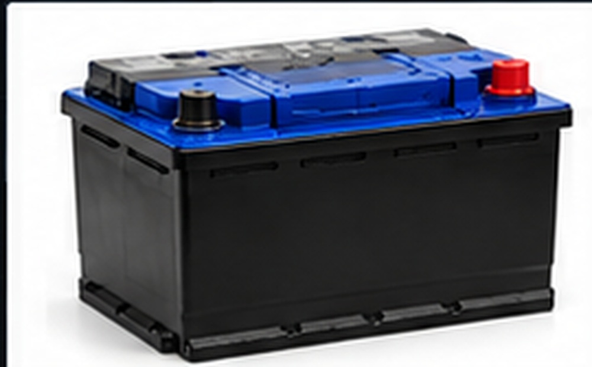

АккумуляторИсточник питания 12 В
Электрика
Аккумулятор
Питает электрооборудование при заглушенном двигателе и обеспечивает запуск через стартер. Подбирать АКБ нужно по ёмкости, пусковому току, полярности и габаритам.
Когда проверять: Проверка нужна, если стартер крутит медленно, свет тускнеет или батарея повторно разряжается после стоянки.
Подбирай только совместимый аккумулятор по параметрам конкретной модели.